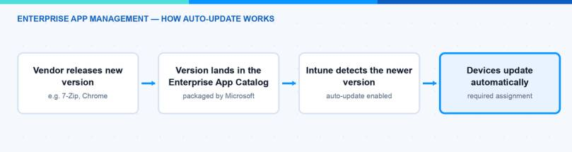
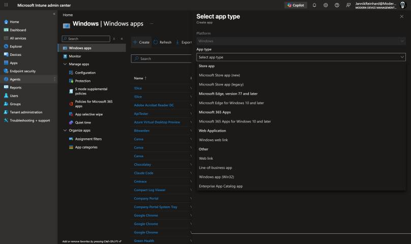
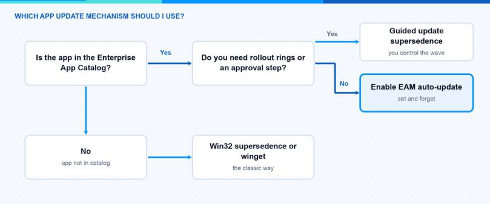

Keeping third-party apps up to date is one of the most time-consuming tasks in app management. Until now we had to create a new app for every new version and connect it with a supersedence relationship. With the June 2026 service release (2606) this changes: Enterprise App Management auto-update is now generally available. In this blog post I explain what the feature does, how you can enable it, and where the classic Win32 supersedence is still the better choice.
What is Enterprise App Management?
Enterprise App Management (EAM) is one of the advanced Intune capabilities. The core of it is the Enterprise App Catalog. This is a collection of Win32 apps (exe and msi) that Microsoft prepares and hosts for you. When you add an app from the catalog, Intune prefills the install and uninstall commands, detection rules, requirements and return codes. You save the whole packaging work.
Two details are good to know before you start. First, EAM only supports managed Windows devices running 64-bit versions of Windows. Second, the apps are installed by the Intune Management Extension (IME) — EAM does not use winget under the hood. You can find all details in the official Enterprise App Management documentation on Microsoft Learn.
What is new in the June 2026 release?
With the service release 2606 (rolled out in the week of June 29, 2026) two things reached general availability:
- Enterprise App Management auto-update: Intune can now update Enterprise App Catalog apps on your devices automatically when a newer version appears in the catalog.
- EAM in GCC High and DoD: Enterprise App Management is now also available in the U.S. Government Community Cloud (GCC) High and Department of Defense (DoD) environments.
The auto-update part is the big one for daily work. Before this feature, the catalog only told you that an update exists. You still had to create a new app for the new version and set up a supersedence relationship. This is the guided update flow, and it works, but it does not scale well when you manage 50 or more catalog apps.
What about licensing?
EAM is not included in Intune Plan 1 or Plan 2. It requires an additional license, either as a standalone add-on or as part of the Intune Suite. But here is the second piece of good news from June 2026: Microsoft announced that Enterprise App Management is being added to Microsoft 365 E5, together with Endpoint Privilege Management and Microsoft Cloud PKI. Microsoft 365 E3 gets Remote Help, Intune Advanced Analytics and Intune Plan 2 at the same time. The change rolls out gradually and eligible tenants are provisioned automatically — no action needed on your side.
Note: If you have Microsoft 365 E5, watch the Message center in your tenant. Once the provisioning reaches you, you can use EAM without buying the add-on.
How does the auto-update work?
The idea behind Enterprise App Management auto-update is simple. When auto-update is enabled for an Enterprise App Catalog app with a required assignment, Intune detects when a newer version is available in the catalog and automatically updates the app on the targeted devices. You do not create a new app. You do not configure supersedence. The app just stays current.

A few facts about the scope:
- Auto-update only works for Enterprise App Catalog apps, not for your own Win32 apps.
- It only applies to apps with a Required assignment. Apps assigned as Available for enrolled devices keep the existing update workflow.
- It is supported on Windows 10 and Windows 11 devices.
- Auto-update is something different than the self-updating apps in the catalog. Self-updating apps (for example some browsers) update themselves through the vendor mechanism, and Intune only checks that a minimum version is installed. Auto-update means Intune itself installs the new version from the catalog.
Note: Microsoft has defined Service Level Objectives for the catalog itself. The target is that 80–90% of app updates are available in the catalog within 24 hours after Microsoft receives them. Updates that need manual validation can take up to seven days, and high-usage apps that fail the automated checks are expedited with a goal of 48 hours. So “auto” does not mean “instant”.
Hint: Intune has no running application detection. It can not see whether the app is open on the device when the update installs. Keep that in mind for apps where a forced close would hurt, like an editor with unsaved work.
How can I enable Enterprise App Management auto-update?
The setting lives in the assignment of the app. You enable it when you add a new catalog app or when you edit the assignments of an existing one. This is how you add a new app with auto-update:
- Sign in to the Microsoft Intune admin center (intune.microsoft.com).
- Go to Apps > All Apps > Create.
- In the Select app type pane, select the Windows platform and then Enterprise App Catalog app. Click Select.

- In the App information step, click Search the Enterprise App Catalog, pick your app and the package (language, architecture, version), and go through the steps. Microsoft prefills the program, requirements and detection settings for you.
- In the Assignments step, add your groups under the Required assignment type and enable the auto-update option for this assignment. Then finish with Review + create.
For an existing Enterprise App Catalog app you edit the app, open its assignments and enable the auto-update option there in the same way.
Hint: If you want to check which of your catalog apps are outdated first, go to Apps > Enterprise App Catalog apps with updates. This view shows all apps where a newer version exists in the catalog. In the All Apps list you can also add the Version column (Apps > All Apps > Columns > Version) to see the deployed versions at a glance — catalog apps show up with the type “Windows catalog app (Win32)”.
Note: If Multi Admin Approval is enabled in your tenant, you can not upload a PowerShell script installer during app creation. You have to create the app first and add the script afterwards.
How does it compare to Win32 supersedence and winget?
Enterprise App Management auto-update is not the only way to keep apps current. Here is a small comparison of the three common options:
| EAM auto-update | Win32 supersedence | winget (Microsoft Store apps) | |
|---|---|---|---|
| Packaging effort | None, Microsoft prepares the app | You package every version | None |
| Update control | Automatic, no approval step | Full control, you decide when | Vendor/store driven |
| Rollout rings | No | Yes, via different groups per version | No |
| App coverage | Several hundred catalog apps (full list on Microsoft Learn) | Any Win32 app | Store catalog |
| Extra license | Yes (EAM add-on / Intune Suite / now included in Microsoft 365 E5) | No | No |

What are the limitations?
Before you enable Enterprise App Management auto-update everywhere, you should know these limitations:
- No rollout rings: When a new version is available, it goes to all targeted devices at the same time. There is no phased deployment.
- No approval step: If you want to review updates before they are applied, keep using the guided update supersedence flow instead.
- No rollback: There is no automatic rollback or uninstall remediation. If a version must go, you have to act manually, for example with an uninstall intent or a remediation script.
- Catalog cache lag: Catalog data is cached for up to one hour. If Microsoft revokes a malicious version, devices can stay exposed during this window. Microsoft posts a notification in the admin center, but you are still responsible for finding and remediating affected devices.
- Reporting shows only the latest state: Intune keeps no history of previous versions per device. And if the version changes while devices are still processing, the report can show devices at different points of the update flow.
- No ESP blocking app: An auto-update catalog app can not be used as a blocking app in the Enrollment Status Page or Autopilot device preparation. Important nuance: catalog apps without auto-update are supported as blocking apps — so for your Autopilot baseline apps, keep auto-update off.
- Conflicts with other app types: Do not manage the same app with auto-update and another deployment type (for example a LOB app). This can create a race condition where the versions flip back and forth.
Note: If app installations fail after an update, the normal Win32 troubleshooting applies. I wrote about the tools and log files in my Intune troubleshooting guide.
What would I choose?
My take is pragmatic. For standard tools like 7-Zip, Notepad++ or VLC-style utilities, Enterprise App Management auto-update is a clear win. These apps have frequent security updates, and nobody wants to build supersedence chains for them. For business-critical apps where an update can break a workflow, I stay with guided update supersedence, because I want rings and an approval step there. And for the apps in my Autopilot ESP profile, auto-update stays off anyway because of the blocking app limitation.
If you have the EAM license already — or your tenant just got it through Microsoft 365 E5 — enable Enterprise App Management auto-update for a small group of low-risk apps first, watch the reporting for two or three cycles, and then roll it out wider.
I hope this is a little help.
Stay healthy, Cheers Jannik